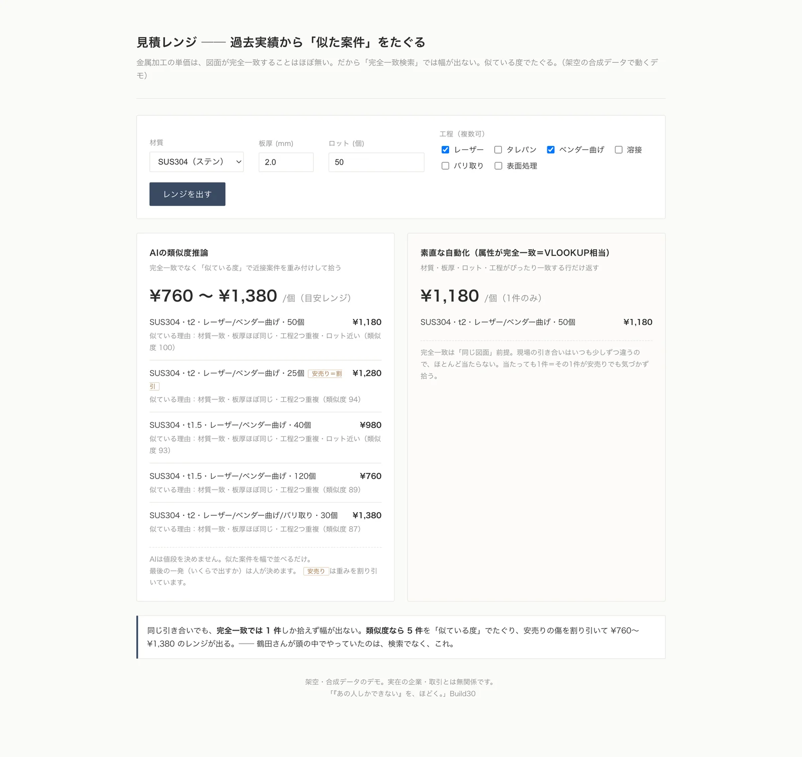
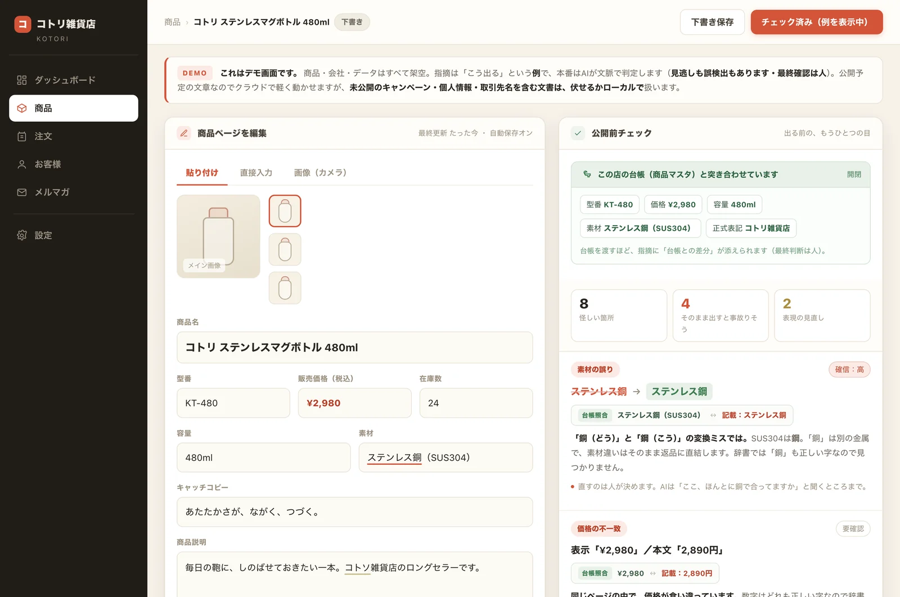
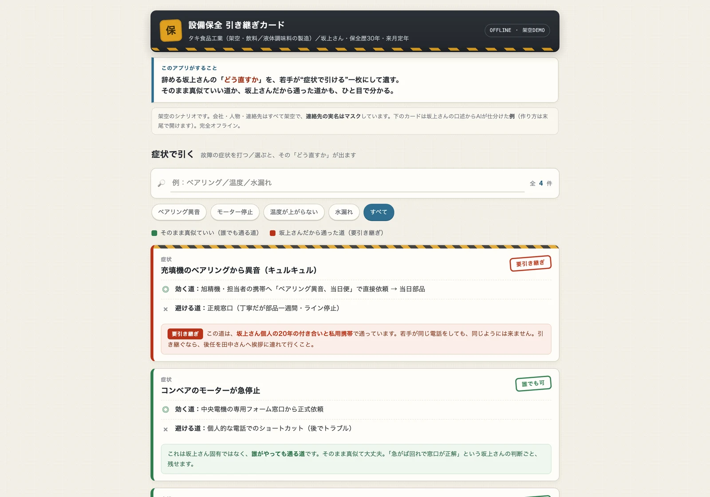

あの人を、 休ませる。
「あの人しかできない」の一番奥は、あの人自身にも見えていません。会社にもう在るものだけを読んで組み立て、それを本人に見せて、確かめてもらいます。
その答え合わせは、その人が居るうちにしか、できません。
読むのは、受注簿・見積の控え・請求書・日報・手書きのメモ。対象は10-80人規模の中小企業。初回は30分の対話から、費用はかかりません。
「これ、いくら？」の電話が、
今日も保留になっている。
図面を見て「1個いくら」と即答できるのは、工場長ひとりです。彼が休んだ日、その電話は保留のまま止まります。
値段の根拠は、30年分の見積の控えの中に、全部あります。ただし、それを引ける索引は、彼の頭の中にしかありません。

過去の見積の控えだけを読ませ、いま来た図面に似た案件を、根拠つきで並べます。金額は出しません。出した数字は、戻せないからです。値段を決めるのは、今も工場長です。このアプリがやるのは、彼が30年かけて作った索引を、代わりに引くところまで。

書いた本人には、
誤字が見えない。
自分の書いた文は、書いたとおりに読めてしまいます。何度読み返しても、素材名の食い違いも、容量の桁も、店名の間違いも、書いた人の目だけは素通りします。
気づくのは、たいてい客です。そして出してしまえば、もう戻せません。
出す前に、もう一度だけ別の目を通します。ただし、直しません。「ここ、ほんとうに銅で合っていますか」「2か所が食い違っています」——指さすところまでが、このアプリの仕事です。どちらが正しいかは、人にしか分かりません。
同じ電話をしても、
同じようには来ない。
保全歴30年の坂上さんが、来月で定年です。若手が訊きました。「ベアリングが鳴ったら、どうするんですか」。坂上さんは答えます。「旭精機の担当の携帯に、直接かける。そうすれば当日に部品が来る」。
若手が同じ番号にかけても、同じようには来ません。その道は、坂上さん個人の20年の付き合いと、私用の携帯で通っていたからです。書き取っても、引き継げない。手順書にした瞬間に、嘘になる。

だから、故障の一件ずつを二色に仕分けます。そのまま真似ていい道（誰がやっても通る）と、その人だから通った道（要引き継ぎ）。後者に要るのは手順書ではありません。後任を連れて、挨拶に行くことです。このアプリが遺すのは、その区別まで。引き継ぎそのものは、人がやります。
そして、この仕分けが正しいかを確かめられるのは、坂上さんだけです。来月を過ぎたら、確かめてくれる相手が居ません。
同じ設計で、25の業種を実演しました。登場する会社と人物は、すべて架空です——実在の企業を分解した記録ではありません。ただしアプリは本物で、25本すべて実際に動きます。残り22本は、下にあります。
アプリ
残りの22本も、
ここにあります。
25本のアプリを、8つの課題に束ねました。
課題を押すと、その課題のアプリだけが並びます。
課題を押すと、下の一覧がその課題のアプリに入れ替わります。
見積「これ、いくら？」に、あの人しか答えられない
受注注文の紙を読めるのが、あの人だけ
段取り今日出せるかが、あの人の頭の中にしかない
電話切ったあと、3つ書いている
出す前誤字・宛先違い・表示の抜け。出してからでは戻らない
引き継ぎ30年分の勘が、本人の頭にしかない。辞めたら消える
支払い続いているから、続けている
割り切れない効率だけでは決められない事情がある
考え方
人を採らないために、
職務そのものを消す。
募集をかけても、来ない。来ても、定着しない。それでも「雇わないと回らない」と思い込み、採用予算を払い続ける——中小10-80人の現場で、よく見る景色です。
だから「採用の前に、一度ほどきましょう」と提案します。一人に寄った仕事を、業務の組み替えとAIでほぐし、その一席を、埋めずに回せる形にする。あの人を、辞めさせないための投資です。
01
惰性
やめても、誰も困らない仕事。診断で見つけて、やめます。
02
足場
間違えても、戻れる仕事。AIに任せます。
03
判断
間違えたら、戻れない仕事。人に残します。
一席は、この3つに分かれます。全部をAIにする話では、ありません。
作るもの
システムではなく、
「AI佐藤さん」。
作るのは、御社のベテランの写しです。写すのは、3つ。
記憶
「前にも、似た案件があった」を思い出す力。過去の受注簿と見積の控えから写します。
問診
うまい人は、答えより先に訊くことが決まっています。その訊く順番ごと写します。
線
どこまで飲むか、どこから断るか。癖は写しますが、線を押すのは最後まで人です。
新しく書類を書いてもらう必要はありません。受注簿・見積の控え・請求書・日報——仕事の副産物として、もう社内にあるものから写します。だから、元気なうちに。
写しは、置き換えではなく解放のためです。あの人が、休める。辞めても、客が困らない。
任せ方
二択ではなく、
ダイヤル。
「AIに任せるか、任せないか」。その二択が、導入を止めています。
段ごとに違うのは「間違えたとき、戻れるか」だけ。例えば、見積。
01 ─ 戻れる
聞き取り
客の要望を整理する。聞き違えたら、訊き直せばいい。
02 ─ 戻れる
過去を探す
似た案件と数字をたぐる。違えば、探し直せばいい。
03 ─ 戻れる
たたき台
下書きを作る。おかしければ、破って作り直せばいい。
04 ─ 戻れない
客に出す
出した数字は、戻せません。ここは人が出します。
戻れる段はAIへ。戻れない段は人に。
回すのは、経営者です。
データの扱い
「AIに渡さない」
という選択が
できます。
- ・全部は読ませません。判断に必要な分だけ読ませます。
- ・名前や取引先は、符号に置き換えてから渡せます。
- ・AIがいま何を参照しているかは、画面にそのまま表示します。
それでも、リスクがゼロになるとは言いません。どこまで渡すかは、始める前に一緒に線を引きます。
証拠
作ったものだけ、
並べます。
優秀作品賞
AIアプリコンテスト。クレーム一次対応と台帳記録を自動化する業務AIエージェントで受賞しました。
−43%
一次対応の工数。12件の小さな検証での削減値です。
※ 試作段階での検証値です。すべての現場で同じ結果を約束するものではありません。
25本
連載。会社と人物は架空です。アプリは25本すべて実際に動かしました。あえてAIを使わなかった回もあります。
対象
向いている会社、
向いていない会社。
合わない会社にお時間を使わせないため、先に明示します。
向いている
10-80人の中小企業
社長が現場を知っている会社。中小製造業・卸・物流・士業周辺・事務系。社長55歳以上が中心です。
「あの人が抜けたら困る」席がある
受注・見積・段取り・電話対応・経理補助など。1社につき一席に絞って始めます。
後継者がいない
または、承継の準備をそろそろ始めたい。
募集をかけても、来ない
来ても、定着しない。採用広告費だけが出ていきます。
向いていない
私の本業と畑が重なる業界
利益相反を避けるため、一律にお受けしません。
100名を超えている
人事部が機能している会社は、採用で解けます。
採用は続けたい
「人を減らさず、採用も続けたい」場合は、お力になれません。
現場の時間を出せない
業務再設計は、社長と現場担当者の言葉なしには進みません。
補助金だけ取りたい
お受けしません。
※ 法務・税務・人事評価の判断は対象外です。
流れ
30分の対話から、
始まります。
最初の30分
30分の対話
オンラインまたは現場訪問。「この人が抜けたら困る」と思い浮かぶ方の話を伺い、対象の一席を見極めます。営業はしません。ここで終えていただいて構いません。
4週間
一席分解診断
現場ヒアリング（90分×2-3回）。一席を惰性・足場・判断の3つに分け、一席分解台帳を納品します。
その後
実装と伴走
AI代替を作り、実データで検証。手順書・例外対応マニュアルごと社内担当者へ引き継ぎ、月次で例外対応を続けます。6ヶ月後に、始める前の基準で判定します。
何を数えるかは、始める前に紙で固定します——採用した人数、担当者の処理時間、採用広告費や残業代などの費目。「良くなった気がする」では終わらせません。
費用のご説明は、お会いしたときに。どこまで作るかが決まらないうちに、数字だけ先に出すのは誠実ではないと考えています。
方針
ポリシー。
運用
- 個人事業として運営
- ご相談対応は平日夜・土日
- 初回返信は48時間以内
- お受けする社数は限定
機密・データ
- NDA締結
- 学習データ不使用契約のAPIのみ使用（米国系ベンダー）
- 保存場所・閲覧権限・保管期間を契約に明記
- 再委託なし
利益相反
- 本業と畑が重なる業界はお受けしません
- 直接競合する案件は受けません
- 紹介コミッションなし
運営者
現場
20年超。

Hiroshift
Hiroshift業務設計事務所
東京拠点。製造業の現場で20年以上、受注・見積・段取りの実務に立ってきました。現場の機微も、伝票一枚の温度も、知っています。
数年前から現場業務のAI化に自分の手で取り組み、AIアプリコンテストで優秀作品賞を受賞。連載25本で、25業種の「あの人しかできない」を分解してきました。
質問
よくある
ご質問。
技術者は不要です。「現場業務を理解している方」を1名担当として決めていただければ進められます。AI側はHiroshiftが動かします。社員側に必要なのは業務理解と意欲だけです。
「人を減らす」には反発が出やすいですが、「辞めた人の穴を埋めずに回す」は受け入れられやすい傾向があります。本サービスは既存社員の解雇・降格・配置転換を一切要求しません。退職・欠員・後継者不在のタイミングで、その穴を採用ではなくAIで吸収します。社員にはむしろ「採用面接・新人教育の負担が減る」というメリットがあります。
30分の対話の段階では、特に準備は不要です。一席分解診断を始める段階で、対象となる席の記録（受注簿・見積の控え・請求書・日報・メールの控えなど、すでにあるもので構いません）をご用意ください。実データの取扱条件は契約前に文書で明確にします。
渡さない選択ができます。判断に必要な分だけ読ませる・名前や取引先を符号に置き換える・AIが参照している範囲を画面に表示する——この3つを実装で担保します。それでもリスクがゼロになるとは言いません。どこまで渡すかは、始める前に一緒に線を引きます。
東京拠点のため、関東圏は初回ヒアリングと業務診断段階で現場訪問を基本とします。それ以外の地域や、導入後の継続支援はオンラインで対応します。運用が遠隔前提のため、導入後は基本リモートで完結します。
お会いしたときにご説明します。どこまで作るかが決まらないうちに、数字だけ先に出すのは誠実ではないと考えています。まず30分の対話で対象の一席を見極め、その範囲が見えてからご提示します。対話の段階で終えていただいて構いません。
月次運用・例外対応・改善提案を継続します。平日日中はメール返信が遅れる場合がありますが、初回返信は48時間以内を目安にしています。緊急時の扱いは契約前に取り決めます。
お問い合わせ
まず、
30分。
「この人が抜けたら困る」を一緒に見つけるところから。
30分・オンラインまたは現場訪問・費用はかかりません・営業はしません。